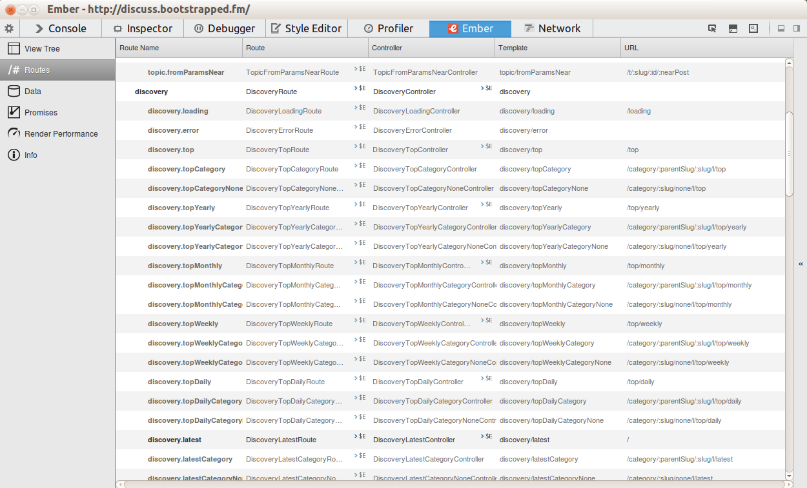

Ember.js
A framework for creating ambitious web applications.
A trend that matters (maybe?).
Client side applications are hard.
What do we want?
NOW!
When do we want it?
Race condition!
SPA challenges
- Long running apps: memory leaks.
- Serialize state into and out of the URL.
- Query parameters.
- Don't push type ahead searches onto the history stack
- Don't break the Back button.
- Optimize for all the browsers.
- Loading and error states
Conventions
- Common patterns should become framework conventions.
- Doing the wrong thing should be hard.
- You are not entirely unique; others have solved the same problems.
- "You can't not use a framework" -- Ryan Florence
MVC... but how?
- Routes turn the url into data.
- Models are persisted state.
- Views handle DOM events.
- Controllers are long lived local only state.
Mapping URLs.
-
var App = Ember.Application.create();
App.Router.map(function() {
this.resource('posts', {path: '/'}, function() {
this.route('create', {path: '/new-post'});
});
this.resource('post', {path: '/read/:id'});
});
Changing URLs.
-
var App = Ember.Application.create();
App.Router.map(function() {
this.resource('posts', {path: '/blog'}, function() {
this.route('create', {path: '/new'});
});
this.resource('post', {path: '/blog/:id'});
});
-
{{#link-to 'posts'}}Read my blog{{/link-to}}
{{#each posts}}
{{#link-to 'post' this}}Read more about {{title}}{{/link-to}}
{{/each}}
Ember Inspector: Routes

Ember Inspector: Promises
Ember Inspector: Performance
Ember CLI is the future.
- Under heavy development.
- I'm already using it; I think you can too.
- Go from idea to writing business logic in minutes.
npm install emberjs
ember serve
// write code
ember build --environment=production
Batteries included.
- Creates file structure.
- LiveReload, just install the browser plugin.
- Write ECMAScript 6 modules, it transpiles to ES5.
- Ready for testing using QUnit.
- Mock non-existent server endpoints.
What's this ES6 of which you speak?
import Geo from '../mixins/geo';
var privateGeo = Geo;
export default Ember.Controller.extend(Geo, Ember.Evented, {
location: function() {
this.trigger('moved');
}.observes('geolocation.latitude')
});
Closing.
- Googlebot now indexes single page apps quite well.
- Screen readers can navigate an Ember app.
- An Ember app is about the size of a small/medium image.
- Ember Components are based on the Web Component spec.
- HTMLBars
Jerel Unruh / @jerelunruh / hello@jerel.co
window.close()